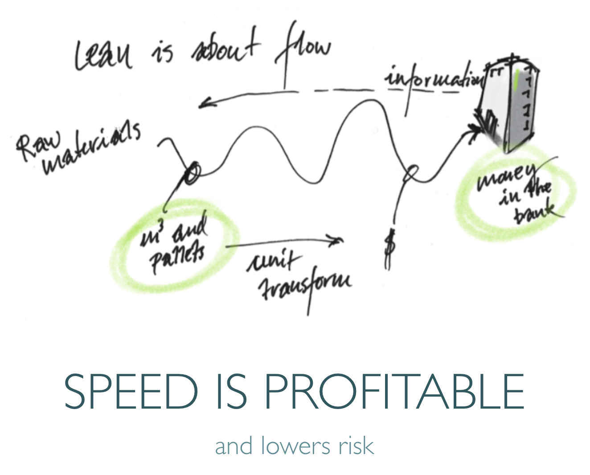

Lean Intro
- secrets revealed -
written by Johan Frisk© 2016

this is the agenda for a two-hour session
the A3 is ready to download if you go down...
this is the A3, the figures will be explained in the slides, don't worry :-)
How to use this presentation
The objective of this presentation is to go through some Lean core beliefs and pinpoint the differences between Lean in factory and development environments.
Navigate in these four ways:
- If you go horisonally to the right you will see the slides in sequence.
- If you go down on any step you will find a written instruction and,
- if you hit 'esc' you will see a navigational view of all the slides.
- If you press 's' anywhere you come to the presenter's window.

Let's start from the beginning with project planning
Traditional project planning
spoiler: this is not the most efficient way of doing things!
...we want control and accountability, but...

Discuss with your neighbour: How do you plan today?

Things are complicated...
Common traps
- We think in lists and have a tendency to put actions one after another
which leads to longer than necessary projects. - We want control and forget that the more detailed the plan the more
fragile it gets. - We want to be forceful and bend the future to our will instead of
dealing with reality. We have the impossible dream that plans are time tables.
A train driver cannot be allowed the same flexibility as a sheepdog.

We assume too much...
- "We know how everything should be done, right from the start"
- "The customer will not change their minds"
- "The world will not change during the project"
- "The salesman's dilemma does not exist"
We act like the project is a canon ball and nothing will influence its flight.
But would we trust an airplane sent to New York without a pilot or navigation system?
Management by means
spoiler: this is better but not enough!
...but, it is the bleeding edge in civil construction, forgotten since the '30s...
Empire state building
- 500 trucks with material per day
- no storage space
- no flood lights - could only work days
- impossible to work during winter
- delivered on time in 18 months
The secret...
- independent steel, walls, windows and floors
- detailed drawings as they were needed
- extra investments in fittings allowing flexibility
- daily replanning... using what they had on the day
- flexible workforce... they worked with
resource buffers and not time buffers

Learning from three Chinese examples
- What is the key learning from this 15 day hotel?
- and from this bridge in Beijing?
- or this rail road construction


there is an optimum traffic intensity... what is yours?
let's move on to something more exiting...

Lean/Agile projekt planning
spoiler: this is balance act between surprise and peace of mind!
doing something new is about learning... as fast as possible :-)


independent events have a 'normal' distribution
even a random walk... is 'normal'...
different size and speed of workpackages... and you have to fail to learn!
The solution :-)
- Planning board: Overview, to do, doing, done
- Clear roles: Team, Product owner and 'scrum master'
- Common backlog with user stories
- Daily stand-up
- Pull system with 'work in progress limits'
- Iterative process in 2-3 week sprints
- Planning before sprint and retrospective afterwards

Let's dive deeper

Value Stream Mapping
A value stream is all activities, both value adding and non-value
adding, needed to refine and produce a product or service.

Queues
A sequence of messages or jobs held in temporary storage awaiting
transmission or processing.
User stories
A description consisting of one or more sentences in the everyday or
business language of the end user or user of a system that captures what a user
does or needs to do as part of his or her job function.


Keywords:
select user stories on cost of delay priority
break down to size that fits in sprint
separate knowledge gaps from implementation
let team decide on time estimate
Cost of delay
The cost of not having the product or service on the market when
customers exist and would purchase if they could.

Lean Management
How to manage so that flow can happen...

SCRUM
A key principle of scrum is its recognition that during production processes, the customers can change their minds about what they want and need.
Let's repeat the Scrum method